A walk together.
Enter the interactive world →A daytime stroll and an evening walk, with JinBingBing following along. These clips were captured in a cloud browser; open the interactive world to experience the movement on your device.
Day and night
A quiet pause

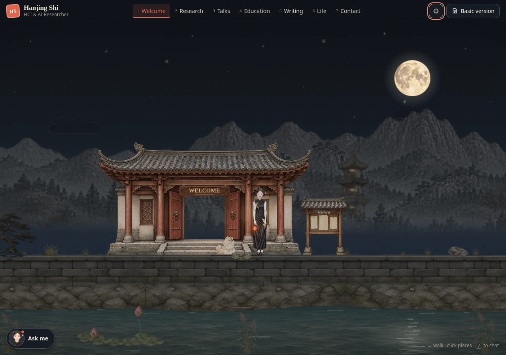

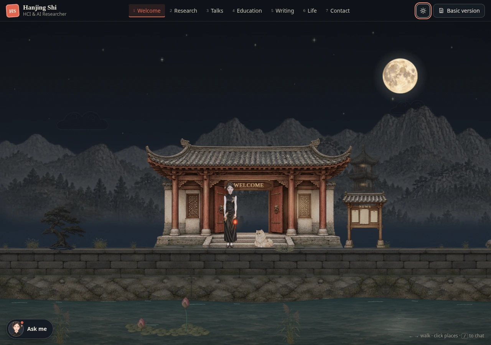
A happy little follower
Seven places to explore
The scenes below are the previous gallery's views. This update focuses on walking and the connection between the portrait and clothing.


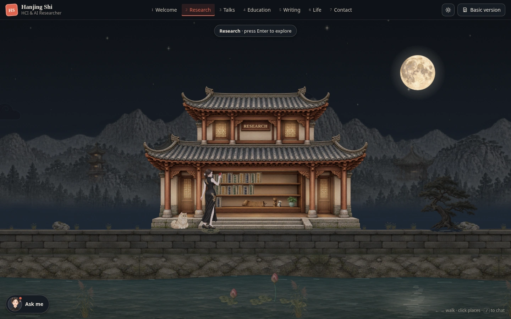

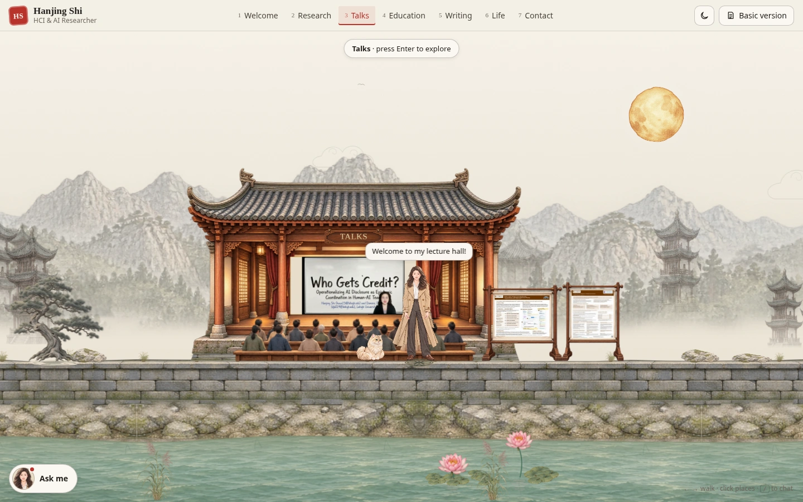

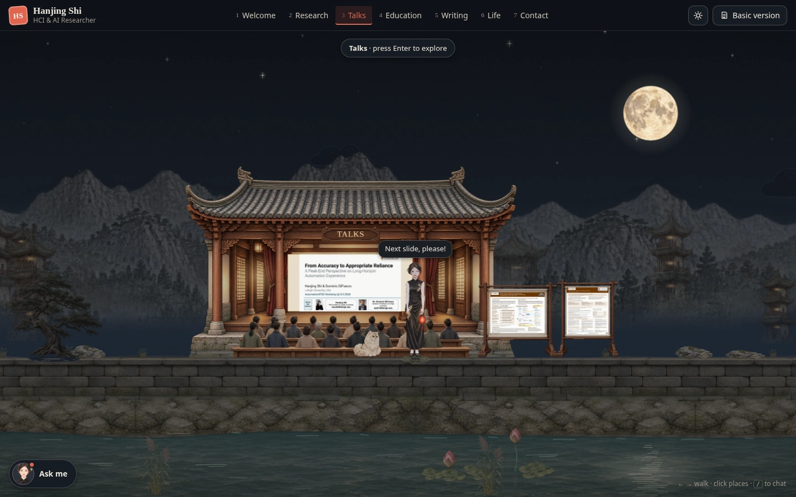

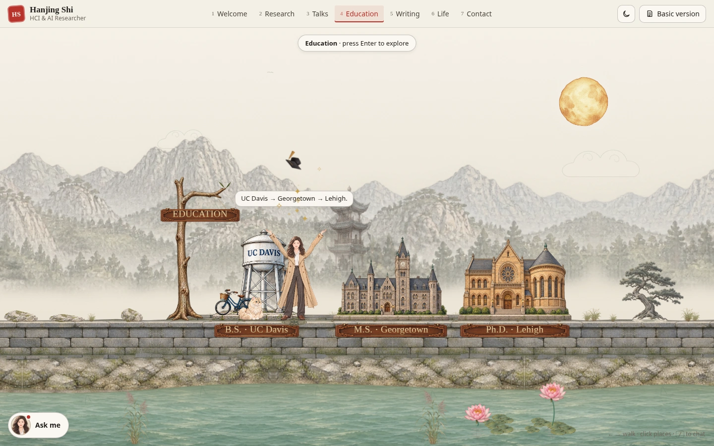

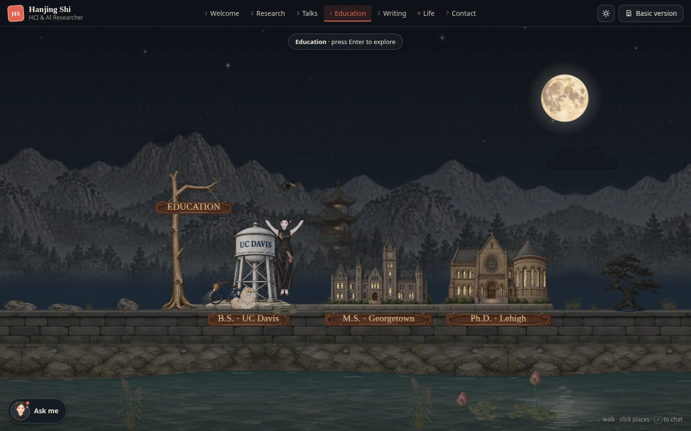

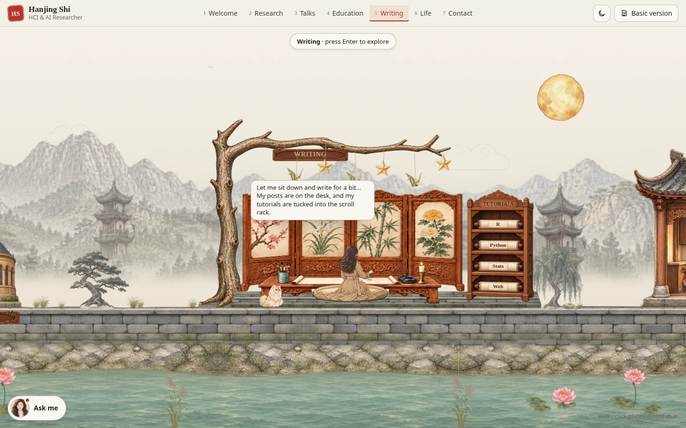

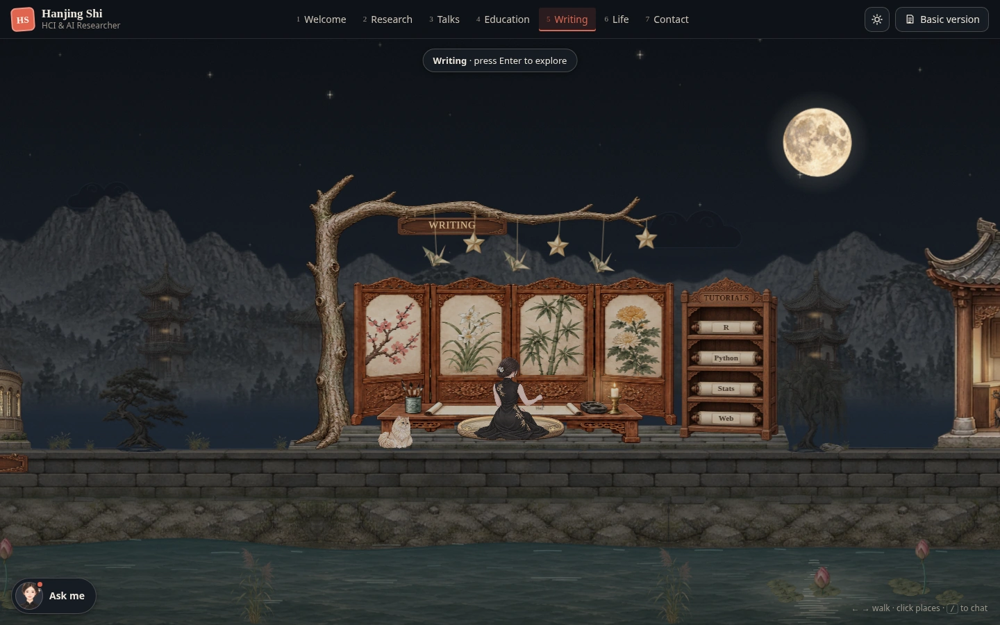

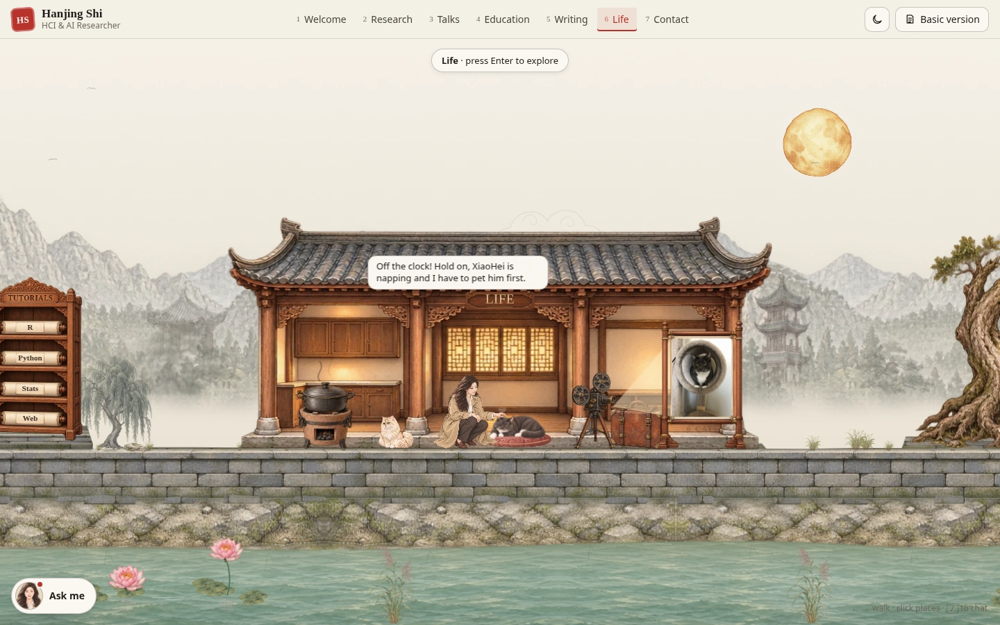


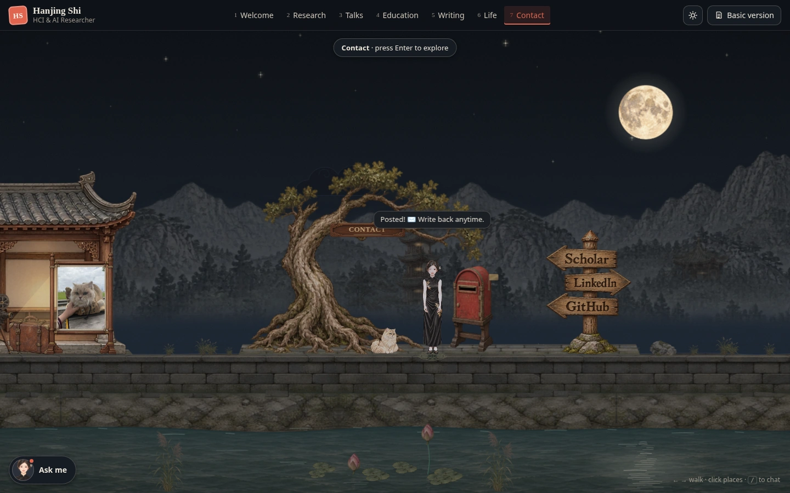